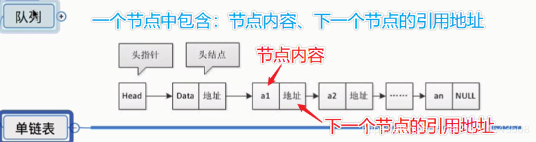

原文连接:https://www.cnblogs.com/yichunguo/p/11887353.html
目录
今天我们来聊聊“链表（Linked list）”这个数据结构。
在我们上一章中【从今天开始好好学数据结构02】栈与队列栈与队列底层都是采用顺序存储的这种方式的，而今天要聊的链表则是采用链式存储，链表可以说是继数组之后第二种使用得最广泛的通用数据结构了,可见其重要性！
相比数组，链表是一种稍微复杂一点的数据结构。对于初学者来说，掌握起来也要比数组稍难一些。这两个非常基础、非常常用的数据结构，我们常常将会放到一块儿来比较。所以我们先来看，这两者有什么区别。数组需要一块连续的内存空间来存储，对内存的要求比较高。而链表恰恰相反，它并不需要一块连续的内存空间，它通过“指针”将一组零散的内存块串联起来使用,链表结构五花八门，今天我重点给你介绍三种最常见的链表结构，它们分别是：单链表、双向链表和循环链表。
链表通过指针将一组零散的内存块串联在一起。其中，我们把内存块称为链表的“结点”。为了将所有的结点串起来，每个链表的结点除了存储数据之外，还需要记录链上的下一个结点的地址。而尾结点特殊的地方是：指针不是指向下一个结点，而是指向一个空地址NULL，表示这是链表上最后一个结点。

@
单链表
package demo2;
//一个节点
public class Node {
//节点内容
int data;
//下一个节点
Node next;
public Node(int data) {
this.data=data;
}
//为节点追回节点
public Node append(Node node) {
//当前节点
Node currentNode = this;
//循环向后找
while(true) {
//取出下一个节点
Node nextNode = currentNode.next;
//如果下一个节点为null,当前节点已经是最后一个节点
if(nextNode==null) {
break;
}
//赋给当前节点
currentNode = nextNode;
}
//把需要追回的节点追加为找到的当前节点的下一个节点
currentNode.next=node;
return this;
}
//插入一个节点做为当前节点的下一个节点
public void after(Node node) {
//取出下一个节点，作为下下一个节点
Node nextNext = next;
//把新节点作为当前节点的下一个节点
this.next=node;
//把下下一个节点设置为新节点的下一个节点
node.next=nextNext;
}
//显示所有节点信息
public void show() {
Node currentNode = this;
while(true) {
System.out.print(currentNode.data+" ");
//取出下一个节点
currentNode=currentNode.next;
//如果是最后一个节点
if(currentNode==null) {
break;
}
}
System.out.println();
}
//删除下一个节点
public void removeNext() {
//取出下下一个节点
Node newNext = next.next;
//把下下一个节点设置为当前节点的下一个节点。
this.next=newNext;
}
//获取下一个节点
public Node next() {
return this.next;
}
//获取节点中的数据
public int getData() {
return this.data;
}
//当前节点是否是最后一个节点
public boolean isLast() {
return next==null;
}
}
单链表测试类
package demo2.test;
import demo2.Node;
public class TestNode {
public static void main(String[] args) {
//创建节点
Node n1 = new Node(1);
Node n2 = new Node(2);
Node n3 = new Node(3);
//追加节点
n1.append(n2).append(n3).append(new Node(4));
//取出下一个节点的数据
// System.out.println(n1.next().next().next().getData());
//判断节点是否为最后一个节点
// System.out.println(n1.isLast());
// System.out.println(n1.next().next().next().isLast());
//显示所有节点内容
n1.show();
//删除一个节点
// n1.next().removeNext();
//显示所有节点内容
// n1.show();
//插入一个新节点
Node node = new Node(5);
n1.next().after(node);
n1.show();
}
}链表要想随机访问第k个元素，就没有数组那么高效了。因为链表中的数据并非连续存储的，所以无法像数组那样，根据首地址和下标，通过寻址公式就能直接计算出对应的内存地址，而是需要根据指针一个结点一个结点地依次遍历，直到找到相应的结点。
你可以把链表想象成一个队伍，队伍中的每个人都只知道自己后面的人是谁，所以当我们希望知道排在第k位的人是谁的时候，我们就需要从第一个人开始，一个一个地往下数。所以，链表随机访问的性能没有数组好，需要O(n)的时间复杂度。
双向链表
接下来我们再来看一个稍微复杂的，在实际的软件开发中，也更加常用的链表结构：双向链表。单向链表只有一个方向，结点只有一个后继指针next指向后面的结点。而双向链表，顾名思义，它支持两个方向，每个结点不止有一个后继指针next指向后面的结点，还有一个前驱指针prev指向前面的结点。
public class DoubleNode {
//上一个节点
DoubleNode pre=this;
//下一个节点
DoubleNode next=this;
//节点数据
int data;
public DoubleNode(int data) {
this.data=data;
}
//增节点
public void after(DoubleNode node) {
//原来的下一个节点
DoubleNode nextNext = next;
//把新节点做为当前节点的下一个节点
this.next=node;
//把当前节点做新节点的前一个节点
node.pre=this;
//让原来的下一个节点作新节点的下一个节点
node.next=nextNext;
//让原来的下一个节点的上一个节点为新节点
nextNext.pre=node;
}
//下一个节点
public DoubleNode next() {
return this.next;
}
//上一个节点
public DoubleNode pre() {
return this.pre;
}
//获取数据
public int getData() {
return this.data;
}
}
双向链表测试
import demo2.DoubleNode;
public class TestDoubleNode {
public static void main(String[] args) {
//创建节点
DoubleNode n1 = new DoubleNode(1);
DoubleNode n2 = new DoubleNode(2);
DoubleNode n3 = new DoubleNode(3);
//追加节点
n1.after(n2);
n2.after(n3);
//查看上一个，自己，下一个节点的内容
System.out.println(n2.pre().getData());
System.out.println(n2.getData());
System.out.println(n2.next().getData());
System.out.println(n3.next().getData());
System.out.println(n1.pre().getData());
}
}
单链表VS双向链表
如果我们希望在链表的某个指定结点前面插入一个结点或者删除操作，双向链表比单链表有很大的优势。双向链表可以在O(1)时间复杂度搞定，而单向链表需要O(n)的时间复杂度，除了插入、删除操作有优势之外，对于一个有序链表，双向链表的按值查询的效率也要比单链表高一些。因为，我们可以记录上次查找的位置p，每次查询时，根据要查找的值与p的大小关系，决定是往前还是往后查找，所以平均只需要查找一半的数据。
现在，你有没有觉得双向链表要比单链表更加高效呢？这就是为什么在实际的软件开发中，双向链表尽管比较费内存，但还是比单链表的应用更加广泛的原因。如果你熟悉Java语言，你肯定用过LinkedHashMap这个容器。如果你深入研究LinkedHashMap的实现原理，就会发现其中就用到了双向链表这种数据结构。实际上，这里有一个更加重要的知识点需要你掌握，那就是用空间换时间的设计思想。当内存空间充足的时候，如果我们更加追求代码的执行速度，我们就可以选择空间复杂度相对较高、但时间复杂度相对很低的算法或者数据结构。相反，如果内存比较紧缺，比如代码跑在手机或者单片机上，这个时候，就要反过来用时间换空间的设计思路。
循环链表
循环链表是一种特殊的单链表。实际上，循环链表也很简单。它跟单链表唯一的区别就在尾结点。我们知道，单链表的尾结点指针指向空地址，表示这就是最后的结点了。而循环链表的尾结点指针是指向链表的头结点。和单链表相比，循环链表的优点是从链尾到链头比较方便。当要处理的数据具有环型结构特点时，就特别适合采用循环链表。比如著名的约瑟夫问题。尽管用单链表也可以实现，但是用循环链表实现的话，代码就会简洁很多。
package demo2;
//一个节点
public class LoopNode {
//节点内容
int data;
//下一个节点
LoopNode next=this;
public LoopNode(int data) {
this.data=data;
}
//插入一个节点做为当前节点的下一个节点
public void after(LoopNode node) {
//取出下一个节点，作为下下一个节点
LoopNode nextNext = next;
//把新节点作为当前节点的下一个节点
this.next=node;
//把下下一个节点设置为新节点的下一个节点
node.next=nextNext;
}
//删除下一个节点
public void removeNext() {
//取出下下一个节点
LoopNode newNext = next.next;
//把下下一个节点设置为当前节点的下一个节点。
this.next=newNext;
}
//获取下一个节点
public LoopNode next() {
return this.next;
}
//获取节点中的数据
public int getData() {
return this.data;
}
}
循环链表测试
package demo2.test;
import demo2.LoopNode;
public class TestLoopNode {
public static void main(String[] args) {
LoopNode n1 = new LoopNode(1);
LoopNode n2 = new LoopNode(2);
LoopNode n3 = new LoopNode(3);
LoopNode n4 = new LoopNode(4);
//增加节点
n1.after(n2);
n2.after(n3);
n3.after(n4);
System.out.println(n1.next().getData());
System.out.println(n2.next().getData());
System.out.println(n3.next().getData());
System.out.println(n4.next().getData());
}
}
最后，我们再对比一下数组，数组的缺点是大小固定，一经声明就要占用整块连续内存空间。如果声明的数组过大，系统可能没有足够的连续内存空间分配给它，导致“内存不足（out of memory）”。如果声明的数组过小，则可能出现不够用的情况。这时只能再申请一个更大的内存空间，把原数组拷贝进去，非常费时。链表本身没有大小的限制，天然地支持动态扩容，我觉得这也是它与数组最大的区别。
你可能会说，我们Java中的ArrayList容器，也可以支持动态扩容啊？事实上当我们往支持动态扩容的数组中插入一个数据时，如果数组中没有空闲空间了，就会申请一个更大的空间，将数据拷贝过去，而数据拷贝的操作是非常耗时的。
我举一个稍微极端的例子。如果我们用ArrayList存储了了1GB大小的数据，这个时候已经没有空闲空间了，当我们再插入数据的时候，ArrayList会申请一个1.5GB大小的存储空间，并且把原来那1GB的数据拷贝到新申请的空间上。听起来是不是就很耗时？
除此之外，如果你的代码对内存的使用非常苛刻，那数组就更适合你。因为链表中的每个结点都需要消耗额外的存储空间去存储一份指向下一个结点的指针，所以内存消耗会翻倍。而且，对链表进行频繁的插入、删除操作，还会导致频繁的内存申请和释放，容易造成内存碎片，如果是Java语言，就有可能会导致频繁的GC（Garbage Collection，垃圾回收）。
所以，在我们实际的开发中，针对不同类型的项目，要根据具体情况，权衡究竟是选择数组还是链表！
如果本文对你有一点点帮助，那么请点个赞呗，谢谢~
最后，若有不足或者不正之处，欢迎指正批评，感激不尽！如果有疑问欢迎留言，绝对第一时间回复！
欢迎各位关注我的公众号，一起探讨技术，向往技术，追求技术，说好了来了就是盆友喔...